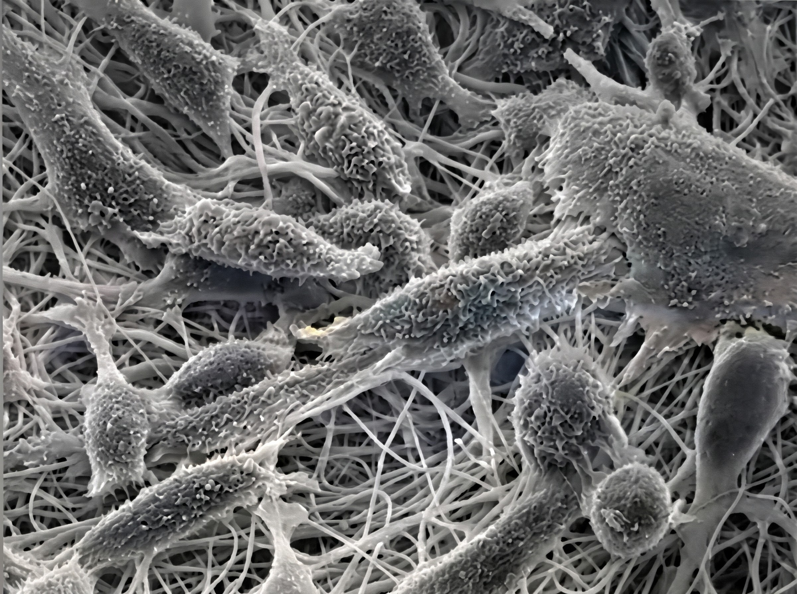
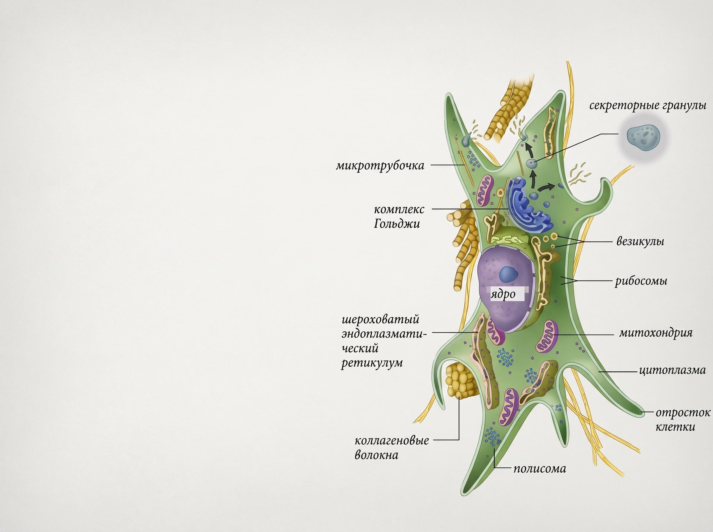

Дерма и фибробласты: как формируются плотность и упругость кожи
Механические свойства кожи определяются организацией коллагена, эластических волокон и межклеточного вещества, а не только поверхностной влажностью. Фибробласты поддерживают этот каркас, реагируют на нагрузку и повреждение, однако их активность и возможности косметологических вмешательств нельзя описать единой возрастной формулой.
Ключевые тезисы (Главное)
- В дерме различают поверхностный сосочковый и более глубокий сетчатый слои; фибробласты присутствуют в обоих и отличаются по свойствам.
- Коллаген I и III типов участвует в опорной сети, но эластичность кожи нельзя приписать одному только III типу: важны эластические волокна и вся организация ткани.
- Возрастные изменения затрагивают синтез, разрушение и пространственную структуру матрикса. Универсального «переключателя в 35 лет» и одинакового для всех процента потери коллагена нет.
- Стимуляция может улучшать отдельные параметры кожи, но не гарантирует восстановление утраченных жировых объёмов, связок или костной опоры.
Анатомия: два этажа дермы
| Уровень | Особенности строения | Значение для кожи |
|---|---|---|
| Сосочковый слой | Рыхлая соединительная ткань, более тонкие коллагеновые волокна, капиллярные петли | Обмен с эпидермисом, поверхностная архитектура и участие в восстановлении |
| Сетчатый слой | Плотная неоформленная соединительная ткань, более толстые пучки коллагена, эластическая сеть | Прочность и сопротивление механической нагрузке |
| Дермально-гиподермальный переход | Соединительнотканные структуры на границе с подкожной клетчаткой | Связь дермы с подлежащими тканями; отдельные особенности клеточного состава |
Исследования человеческой кожи выделяют разные популяции фибробластов, в том числе сосочковые, сетчатые и клетки дермально-гиподермального перехода. Их существование не подтверждает тезис об отсутствии значимой синтетической активности в поверхностной дерме и не задаёт универсальную глубину инъекций. 1
Из чего состоит внеклеточный матрикс
Матрикс — это не пустое пространство между клетками, а биологически активная среда. Коллаген обеспечивает сопротивление растяжению; эластические волокна, состоящие из эластина и микрофибриллярных компонентов, участвуют в обратимой деформации. Гиалуроновая кислота, протеогликаны и другие гликозаминогликаны связывают воду и влияют на распределение нагрузок. Гликопротеины помогают клеткам прикрепляться к окружающим структурам.
Тургор — сопротивление ткани при надавливании — зависит от нескольких факторов, включая гидратацию и состояние подлежащих тканей. Он не является прямым измерением количества коллагена.
Фибробласт как биохимическая фабрика

Фибробласты часто имеют вытянутую форму и отростки, которыми контактируют с матриксом. Через интегрины — рецепторы сцепления с внеклеточными структурами — клетка воспринимает механические сигналы. Изменение натяжения и фрагментация окружающего коллагена могут менять её форму и синтетическую активность.
В активной клетке выражен шероховатый эндоплазматический ретикулум (ЭПР, мембранная система синтеза белков) и комплекс Гольджи (аппарат их дальнейшей обработки и сортировки). Термином «фиброцит» в классической гистологии называют менее активную форму соединительнотканной клетки; в других областях медицины тем же словом могут обозначать циркулирующие клетки иного происхождения. Это не означает, что любое клеточное старение представляет обратимый «сон».
Четыре направления работы фибробласта

| Направление | Что производится или регулируется | Биологический смысл |
|---|---|---|
| Структурные белки | Проколлаген, компоненты эластической системы | Построение и поддержание волокнистого каркаса |
| Основное вещество | Гиалуроновая кислота, протеогликаны и гликопротеины | Гидратация, организация среды, клеточная адгезия |
| Ремоделирование | Матриксные металлопротеиназы и их тканевые ингибиторы | Контролируемое расщепление и обновление матрикса |
| Сигнальное взаимодействие | Цитокины и факторы роста | Связь с иммунными, сосудистыми и эпителиальными клетками |
Разрушение старого матрикса необходимо для обновления, но хронический избыток протеолитической активности повреждает ткань. Эластазы и гиалуронидазы также участвуют в тканевом обмене, однако их источники и роль различаются: представление о фибробласте как единственном поставщике всех разрушающих ферментов слишком упрощённо.
Коллаген I и III типов: не «старый» и «молодой»
| Компонент | Роль | Важное уточнение |
|---|---|---|
| Коллаген I типа | Основная часть фибриллярного коллагена взрослой дермы, прочность при растяжении | Присутствует в нормальной молодой коже и не является признаком старости |
| Коллаген III типа | Более тонкая фибриллярная сеть, участие в структуре дермы и заживлении | Сохраняется во взрослом возрасте; не является единственным источником эластичности |
| Эластические волокна | Возврат ткани после растяжения | Повреждаются при старении и хроническом УФ-воздействии |
Соотношение коллагенов зависит от зоны, метода исследования, возраста, фотоповреждения и состояния ткани. Коллаген III типа не «исчезает после 35 лет», а возрастная динамика не позволяет вывести для каждого пациента одинаковую скорость потери или двукратное снижение к определённому возрасту.
Как собирается коллагеновый каркас
Многоступенчатая организация объясняет прочность волокна, но фиксированная схема из пяти «порядков» с обязательными 20–30 микрофибриллами не является универсальной гистологической классификацией.
| Уровень организации | Что происходит |
|---|---|
| Альфа-цепи | На рибосомах ЭПР синтезируются белковые цепи-предшественники |
| Проколлаген | После внутриклеточной модификации формируется тройная спираль с концевыми пропептидами |
| Внеклеточная молекула коллагена | После секреции ферменты удаляют пропептиды; молекулы становятся способны к упорядоченной сборке |
| Фибриллы | Молекулы объединяются с характерным взаимным смещением; формируются поперечные связи |
| Волокна и пучки | Фибриллы объединяются в более крупные структуры, ориентированные в тканевой сети |
Синтез отдельных молекул и перестройка клинически заметного участка кожи идут в разных временных масштабах. Нельзя приравнивать несколько месяцев наблюдения после процедуры к сроку производства одной молекулы.
Почему кожа меняется с возрастом
На матрикс влияют внутреннее старение, ультрафиолет, курение, гормональные изменения, воспаление и механическая среда клетки. Повреждение и фрагментация волокон могут сочетаться со снижением синтеза, клеточной сенесценцией (устойчивым изменением клеточного состояния) и накоплением гликированных структур — соединений белков с сахарами.
Сдвиги начинаются постепенно и неодинаково у разных людей. Решение о лечении основывается на диагнозе и выраженности изменений, а не только на паспортном возрасте.
Практический смысл: возможности и ограничения стимуляции
| Клиническая задача | Возможный подход | Что ограничивает результат |
|---|---|---|
| Фотоповреждение и мелкие морщины | Фотозащита, наружная терапия; процедуры по показаниям | Различия в переносимости и выраженности повреждения |
| Рубцы и изменения текстуры | Аппаратные и другие методы, подобранные по виду рубца и фототипу | Глубина рубца, риск пигментации, необходимость курса |
| Снижение плотности | Отдельные коллагеностимулирующие и аппаратные методы | Неодинаковая доказательная база, отсутствие гарантированного лифтинга |
| Дефицит объёма или выраженное смещение тканей | Отдельная оценка жировых компартментов, связок и костной опоры | Одной перестройки дермы может быть недостаточно |
Для наружного третиноина имеются данные рандомизированного исследования с оценкой признаков фотоповреждения и маркера синтеза проколлагена. Следовательно, прямое введение вещества к глубокой границе дермы не является обязательным условием любого влияния на дермальный матрикс. 2
План оценки результата зависит от метода: изменения могут появляться постепенно в течение недель и месяцев, а ремоделирование продолжаться дольше. Срок 3–4 месяца может быть контрольной точкой конкретного протокола, но не универсальной датой завершения всех процессов. Стандартизированные фотографии информативнее ежедневной субъективной оценки.
Реабилитация: норма и тревожные сигналы
| Физиологическая норма | Повод сразу обратиться к врачу |
|---|---|
| Умеренная чувствительность, локальное покраснение или отёк в пределах ожидаемой реакции конкретного метода | Нарастание боли, горячая кожа, распространяющаяся краснота, лихорадка или гнойные выделения |
| Небольшой синяк после инъекции с постепенным изменением цвета | Побледнение, похолодание или сетчатая синюшность кожи после введения препарата |
| Временные папулы, если они предусмотрены техникой и постепенно исчезают | Новые, стойкие, болезненные или воспалённые узлы, в том числе появившиеся спустя недели |
| Отсутствие системных симптомов | Нарушение зрения, речи, слабость или затруднение дыхания — основание для немедленной экстренной помощи |
Уход определяется способом вмешательства: мягкое очищение, согласованное увлажнение и фотозащита. До восстановления барьера не применяются раздражающие активы; массаж выполняется только по конкретному назначению. Нельзя самостоятельно «разбивать» уплотнения, прогревать их или принимать антибиотики и гормоны без осмотра. Признаки сосудистого осложнения после филлера требуют срочной оценки. 3
Частые вопросы пациентов (FAQ)
После 35 лет кремы перестают работать?
Нет. Увлажнение, поддержка барьера и фотозащита сохраняют значение в любом возрасте. Возможности конкретного действующего вещества определяются доказательствами, а не единственным возрастным порогом.
Можно ли «разбудить» все стареющие фибробласты?
Нет. В ткани сосуществуют разные клеточные состояния; физиологический покой и сенесценция не равнозначны. Процедуры не гарантируют полного восстановления молодой клеточной популяции.
Можно ли определить количество коллагена щипковым тестом?
Нет. Пальпация помогает оценить свойства ткани, но зависит также от воды, толщины кожи, жира и связок. Она не заменяет количественное исследование матрикса.
Нужно ли стимулировать коллаген заранее, до появления изменений?
Универсальной необходимости нет. Фотозащита и отказ от курения полезнее профилактического травмирования без показаний. Лечение рубцов и других состояний может быть обосновано и в молодом возрасте.
Источники
- 1 Первичное исследование молекулярных и функциональных различий фибробластов разных зон человеческой дермы.
- 2 Kang S. и соавт. Двухлетнее рандомизированное исследование третиноина при фотоповреждении.
- 3 FDA. Информация о рисках дермальных филлеров.
Материал носит информационно-образовательный характер и не заменяет очную консультацию врача-косметолога. Процедуры подбираются индивидуально после диагностики.